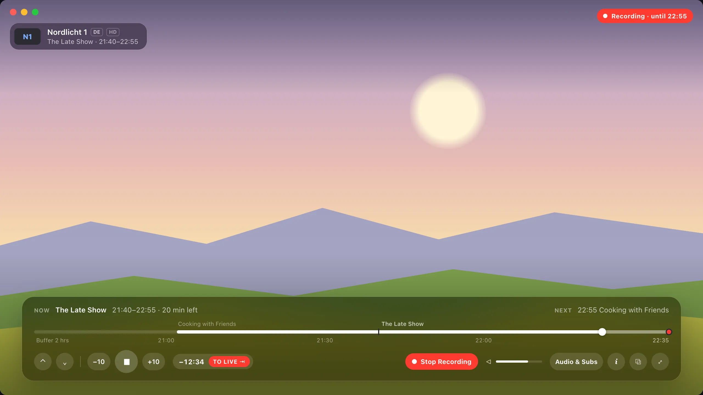
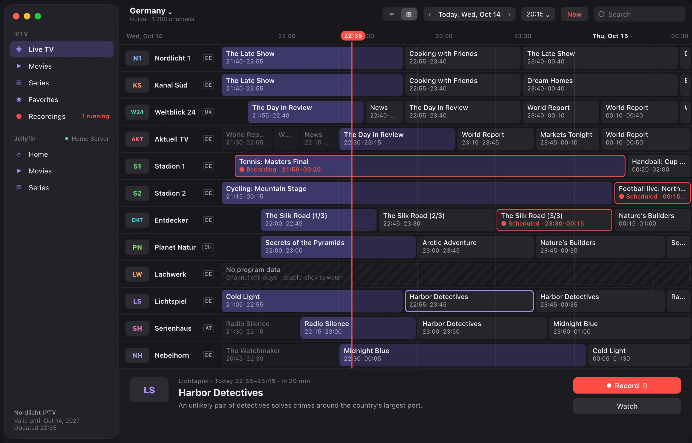
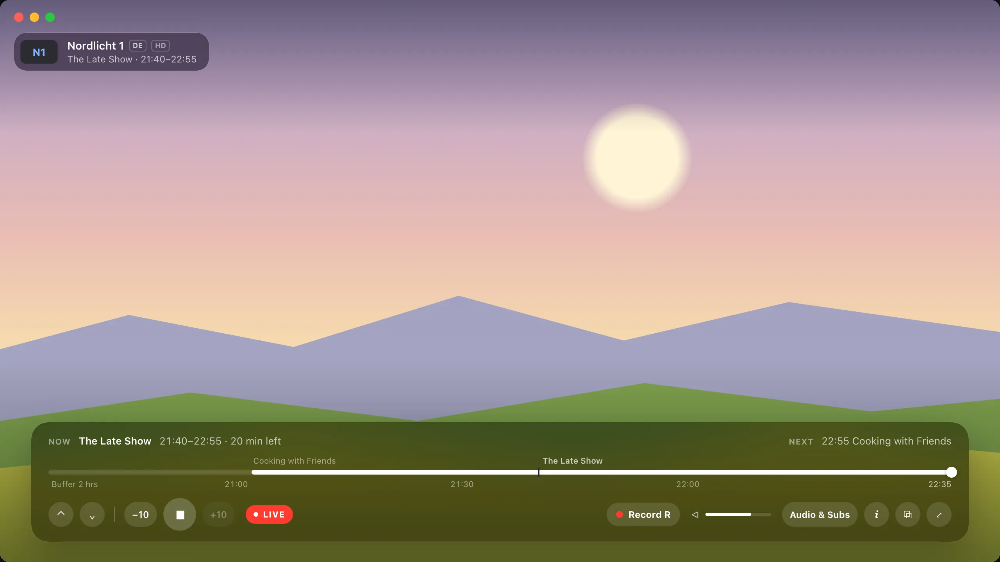
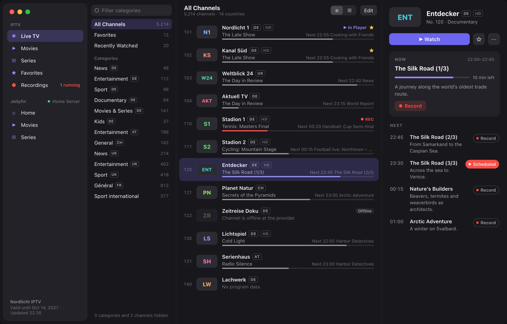
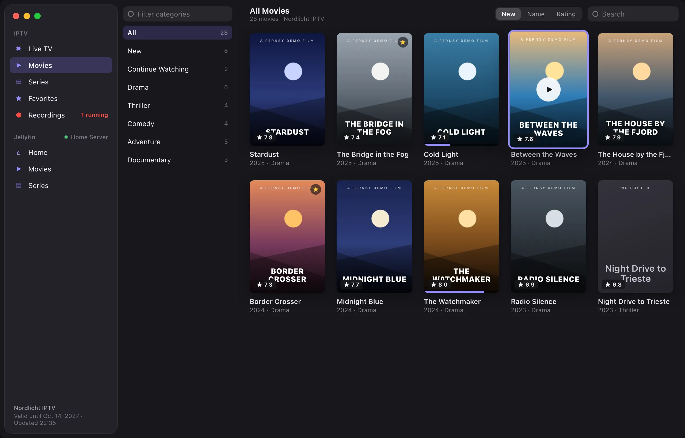
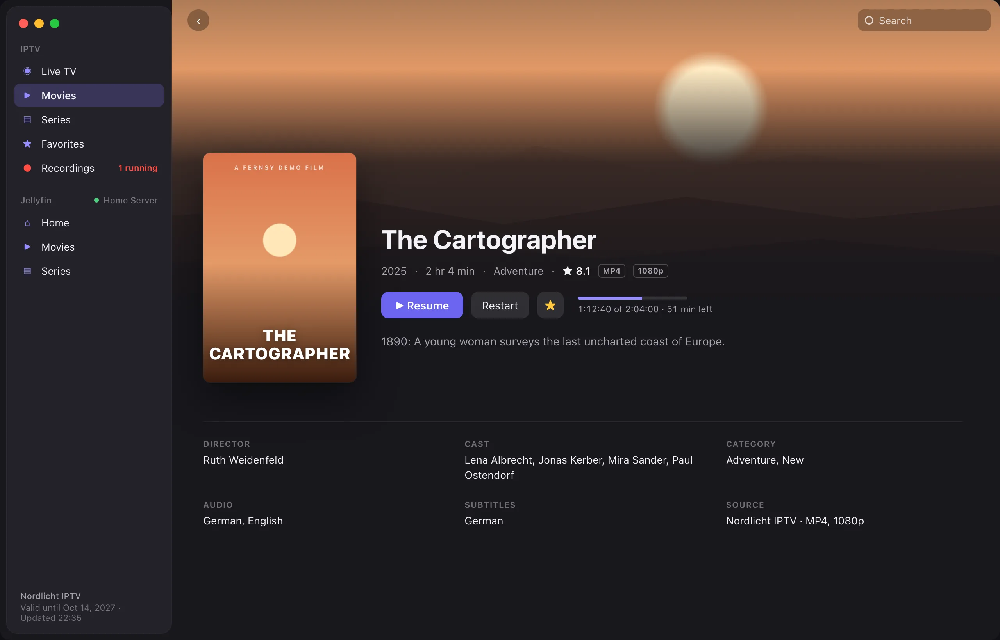
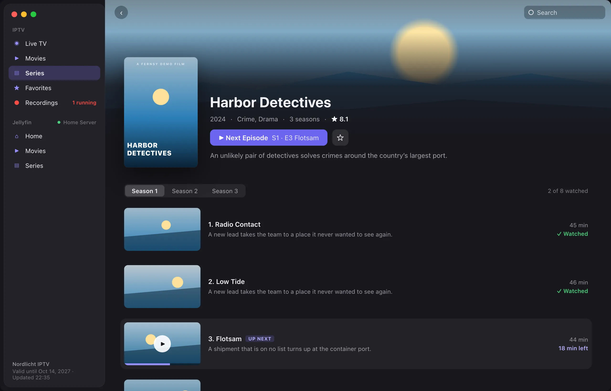
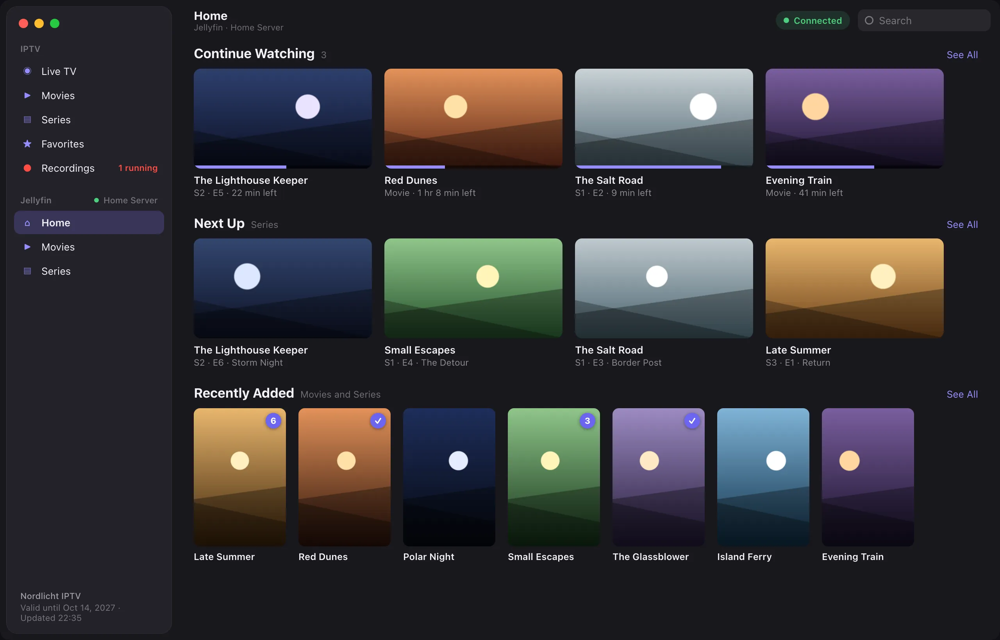
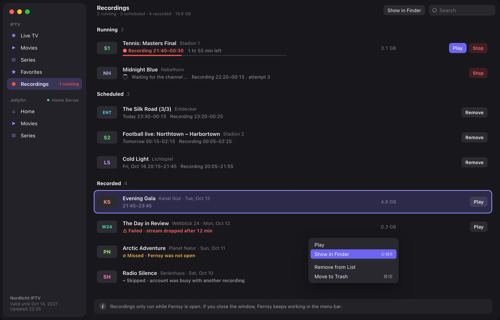

Your IPTV subscription as a real Mac app
Live TV with a program guide, movies and series – fast, native and ad-free. For Xtream Codes accounts.

Program guide with all channels and a now line

Live TV in the player with the current show

Channel list with categories and what is on now

Movie catalog as a poster grid

Movie details with plot and cast

Series with seasons and episodes

Record, rewind and your own media library.
Your own media server, right next to your IPTV account.
Connect your Jellyfin server as well. Both accounts are active at the same time and appear separately in the sidebar, with the same controls.
- Continue Watching, Next Up and Recently Added on one home page
- Libraries and genres as categories
- Watched status, unwatched episodes and favorites
- The library stays visible when the server is offline

Record shows without missing a thing.
Record right from the channel list, the program guide or the player. Fernsy keeps working in the menu bar, even when the window is closed.
- Adjustable padding before and after
- Play while still recording
- Running, scheduled and recorded in one list
- Clear notes on failed or missed recordings

Timeshift
Pause live TV and rewind up to two hours. One click takes you back to live.
Picture in Picture
Keep watching while you work on your Mac. Switching channels works in the small window, too.
One search for everything
Channels, movies, series, recordings and Jellyfin in one search field, sorted by source.
Menu bar
Running and upcoming recordings at a glance, even without an open window.
Everything Fernsy does
Live TV
- Channel list with categories, search and favorites
- Program guide for all channels
- Switch channels with the arrow keys
Movies and series
- Poster view, sorted by newest, name or rating
- Seasons and episodes
- Continue where you left off
Playback
- Hardware decoding, up to 4K
- Deinterlacing on the GPU
- Seamless reconnects on network dropouts
Privacy
Fernsy collects no data. Your credentials stay in your Mac’s keychain, and the app only connects to your provider.
Important: Fernsy contains no channels, movies or other content and sells no subscriptions. You need an account (Xtream Codes API) with an IPTV provider of your choice.